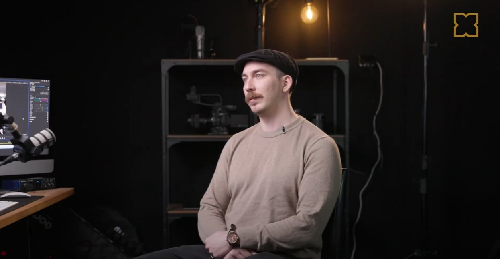
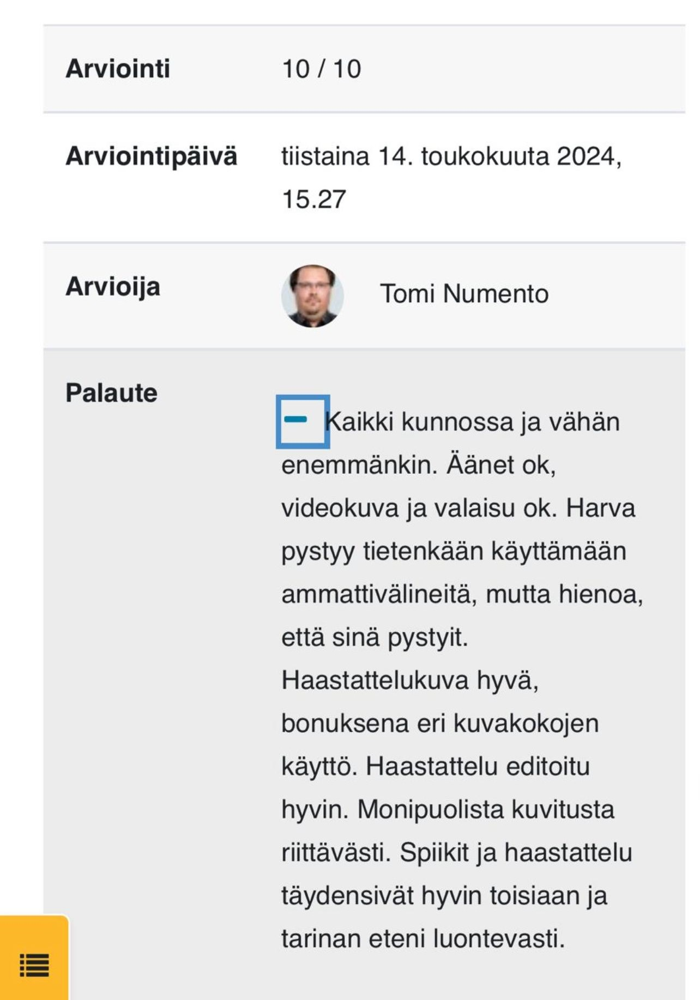

Video Interview
Self-directed video project
As the final assignment of the course, an independently completed news-style video project was produced. The topic was freely chosen. I selected “Photography – From Hobby to Profession,” in which I interviewed video and photographer Antti Vähä at his studio.
The project started with writing a script and preparing interview questions, followed by filming using freely chosen equipment. The main video footage was recorded with a Canon R5 camera, and narration audio was recorded using a Rode Podmic. Roden Lavalier microphones were used for the interview responses. Finally, the video was edited and color graded in Adobe Premiere Pro, and the audio was finalized in Adobe Audition.


The full video has been published on YouTube. You can watch it here.
Equipment and software used:
- Canon R5
- Rode Podmic
- Rode Lavalier microphones
- Adobe Premiere
- Adobe Audition
Instructor's Feedback
(Only in Finnish)
